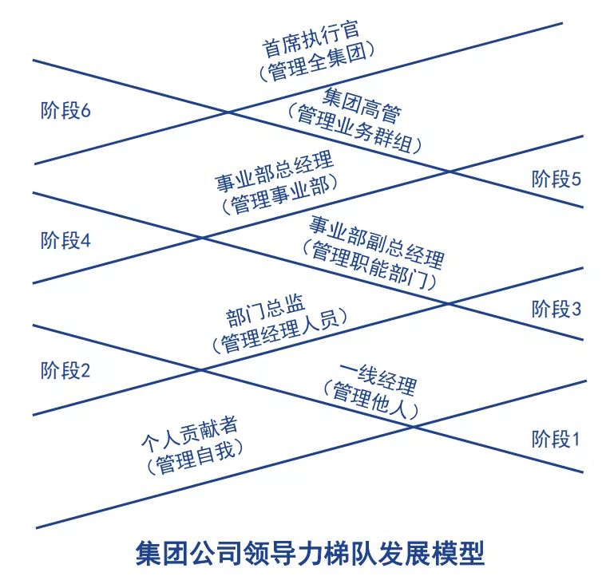
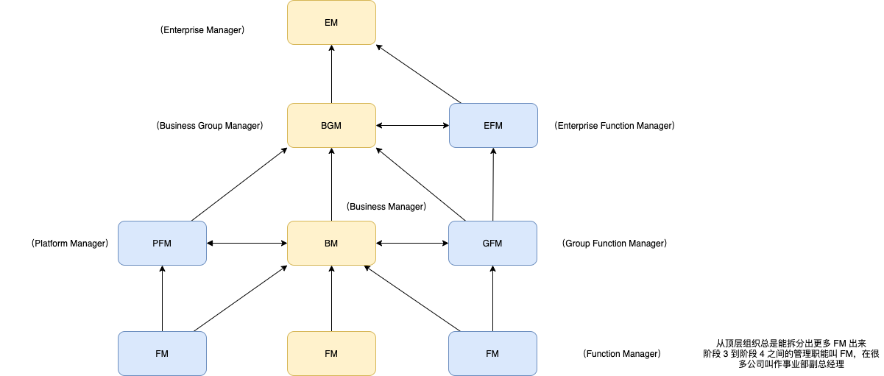

领导梯队笔记
何谓领导梯队
定义
领导梯队：英文(leadership pipeline)应该更合适，不同层级更像是一个管道，会流转会转弯。这个转弯非常重要，每个人不是通过走直线，而是需要通过转折完成转变。在每一层级都需要不同的工作技能、时间分配方式、价值导向。如果你不能很好地意识到这个转变，就不利于完成这个转变。在公司里面如果某个层级出现问题，这级管道堵塞了，那么剩下的都会出问题。因为人才培养除了自己努力，直接上级是起很重要作用的，不然会阻碍下级的提升，所以有一级管道堵住了后面就会没有水。
比较科学的组织结构，是Enterprise-BG-BU。
管理自己——管理他人——管理管理者——管理职能(FM)——管理事业部(BM)——管理事业群(BGM)——管理企业(EM)


德鲁克说过：没有能力或者不愿意因新职位的需求而做出改变。管理者继续沿用先前的成功方法二不能进化，几乎是注定要失败的。
德鲁克还说：管理本质上不是science（科学），而是practice（实践）。没有实践并不能真的学会。所以实践是关键。但理论框架体系的支撑也很重要，它决定了最终成就的高度。《领导梯队》提高了认知起点，不用在很低水平去反复摸索，然后通过实践可以站稳在这个起点上，再看是否有机会往前推进。这是这本书的意义。
有几个门槛特别有意思：
- 从 MS 到 MO：从成就自己到成就他人。
- 从 MO 到 MM：从管理业余选手到管理专业选手，被管理者也有管理意识。
- 从 MM 到 MF：要很懂，做到这个 function 里特别特别懂的人，能压得住事情。
- 从 MF 到 MB：特别特别困难。一个集团要有自己的总经理发展计划，能够做职能的轮岗，通过转换大量实践。FM 是可以转成 GFM 的，也可以转成 BM。当一个 FM 可能会是最懂这个 function 的人，但 BM 要相信自己的 FM 比自己更懂这个 function。BM不比下属更懂专业领域事情的时候，BM怎样建设和团结这样的团队，就成为至关重要的事情（这是一种“能上能下”）。一旦成为BM，做决策是责无旁贷的。其实往上推也不可能做出太好的决策，BGM能给出一些辅助意见或者经验积累，但是上一层级是没有BM有那么全面信息的。所以指望上一级帮你做各种决策，短期看来OK，长期也是搞不好业务的。BM是一个信息最聚集的节点，有大量的信息。信息通过传递总会有大量的损失，所以必须BM够强，能够接受各种信息，抗住各种压力，做出各种决策。一方面要信息输入，另一方面要信息输出。哪怕这个BM不是非常善于言辞，不喜欢高调出镜，也必须有一定的 visibility 的能力。能把想清楚的事情给其他人讲清楚，是最累，最有挫折感的事情。不要忽视短期不创造价值的方向（人士和财务），不要忽视自己擅长的领域（重视自己不擅长的领域是一种进步，重视自己擅长的领域的下属是一种更难的进步）。
- 从 MB 到 BGM：？
一个 business group 里面会有几个事业部，BGM也会需要 group 层面的职能 head，比较典型的是财务、人力资源，也可以有技术、产品、设计、品牌等。再往上的话，可以发展为整个企业的某一个 function manager，比如 CFO 是公司整个财务 function 的 EFM 。BM 和 GFM 之间是有可能转换的；BGM 和 EFM 之间也有可能转换的。
BM 是一个特别重要的阶段，要真正为损益表负责。商业一方面是创造，一方面是竞争，战争也是竞争，是赌注最大的竞争。《孙子兵法》开篇就说，“兵者，国之大事，死生之地，存亡之道，不可不察也”，说的是战争的胜败赌注太大了，不可不重视。“道、天、地、将、法”，总经理项目讲的就是“将”的部分。《孙子兵法》讲怎么选将，观点非常清楚，“智、信、仁、勇、严”，“智”放在了第一位，作为一个将领“智”是非常重要的。所谓的智是热爱思考、懂得思考、懂得训练思考、懂得在思考中运用智慧。成为一个 BM 的过程非常复杂，所以智既依赖于天赋，也依赖于训练。要正面认知到智的重要性，也要通过行动改变自己的思考。要平和地看待自己还不懂的很多东西，要平和看待很多事情的信息量非常复杂。这也是懂得思考的表现之一。
聪明程度不变的前提下，做事的机会却发生了天翻地覆的变化。以前没有机会，人就没有办法通过实践去领悟，也没有人来 coach 他的职业素养。各行各业，全时段都有无数聪明的人。国运非常重要，时时刻刻都会变。本来商业社会里面要有人才培养有流动，整个体系才是比较完备的（互联网行业有一个好处是 IBM 、微软和 Google 之前培养了不错的工程师和产品经理，这些人才是有的。在后来中国互联网兴起的时候，这些人可以转移过来，所以给中国互联网提供了产品经理和工程师。）。人不能在一个有清晰的晋升通道的环境里待着，最后可能浪费自己的天赋。
很多人没有坐过一个特定的位置，或者名义上坐过一个位置，这都是不够的，一个位置的权责不完整。根据“彼得定律”，一个人总是被升到不能胜任的职位。如果企业发展，能够胜任的人总是能够晋升到更高的位置。如果公司没有大发展的话，那么最后剩下的都是不胜任的人。这是一个听起来很荒谬但是逻辑上很清晰的事情。胜任的领导者又可以分两类，一类是可以开创新业务，另一类是能够接管和持续发展原有业务。只有能创业才能守业。如果一个领导者不具备从 0 到 1 创立新业务的能力，只去守业务的话，可能只是短期OK，中长期来看如果不能足够敏锐地感受到变化，就会出问题。
要有耐心。一个组织要相信一个周期才能成一件事，资源不够对一个人没有耐心也没办法。一个人如果急于获得进展，换方向而无积累，本身也不利于这个人的发展。
另一种角度的导读
个人贡献者
职业意识、专业技能、高绩效表现。可能还需要加上项目管理能力，沟通软技能等其他 skill set。
一线经理
- 领导技能
- 工作计划
- 知人善任
- 分配任务
- 激励员工
- 教练辅导
- 绩效评估
- 时间管理
- 部分时间用在管理工作上
- 工作理念
- 重视管理工作而不是亲力亲为
- 通过他人，完成任务
当我们没有这么做的时候，我们是不是事后想一想，如果我们这么做，会不会更好。
在第一阶段，一线经理的转型会遇到各种挑战，忽略与直接下属的沟通重要性，不愿意花时间去倾听下属的意见，还是按照以往的工作套路去完成任务。更多的时候是直接帮助下属完成工作，事必亲躬，而不是辅导下属如何去做。
无法提高下属的胜任力是一线经理在转型时遇到的关键挑战，这主要体现在以下几个方面：
1）把下属提出的问题当成是障碍；
2）补救下属工作失误，而非教会如何正确去完成挑战性工作；
3）拒绝与下属分享成功，逃避对下属的问题和失败；
4）没有给予足够的支持和建立员工的文化价值观。
一个好的领导者如果不能把机制建立起来是无用的。
部门总监
- 领导技能
- 选拔人才担任一线经理
- 为一线经理分配管理工作
- 教练辅导
- 评估一线经理的进步
- 超越部门，全局性考虑，有效协作
- 时间管理
- 主要时间用在管理工作上
- 工作理念
- 管理工作工作比个人贡献重要
- 重视其他部门的价值和公司整体利益
事业部副总经理
- 领导技能
- 新的、高超的沟通技巧
- 制定业务战略实施计划
- 与其他部门协作、同时争夺资源
- 时间管理
- 花时间学习本专业以外的知识
- 工作理念
- 大局意识
每一级都要给下一级以辅导，不过初级的管理者要给任务的辅导，高级管理者要给管理的辅导。
事业部总经理
- 领导技能
- 制定业务战略规划
- 管理不同职能部门
- 意识到各部门利益、顺畅沟通
- 与各方面的人共同工作
- 兼顾长远目标与短期目标
- 对支持性部门的欣赏
- 时间管理
- 花更多的时间分析、思考和沟通
- 工作理念
- 从盈利的角度考虑问题
- 从长远的角度考虑问题
集团高管
- 领导技能
- 评估财务预算和人员战略规划
- 教练辅导事业部经理
- 管理新的业务
- 评估业务的投资组合策略
- 冷静客观地评估管理的资源和核心能力
- 时间管理
- 花时间学习本专业以外的只是
- 工作理念
- 大局意识
- 长远思考
首席执行官
- 领导技能
- 善于平衡短期与长期利益，实现可持续发展
- 决定公司发展方向
- 确保执行到位
- 管理全球化背景下的公司
- 培育公司的软实力，激发全体员工的潜能
- 时间管理
- 不能忙于外部应酬，忽视内部管理
- 要在公司软实力建设方面投入时间
- 工作理念
- 推进公司渐进的变革与转型
- 长期与短期之间寻找平衡点并有效地执行
- 保持与董事会密切沟通与协作
- 倾听各利益相关方意见